直近1週間の更新
9/7 (月)

「ブラウザで100GBのログを開ける」は本当か — Log Voyager と Wasm版 UwView を47GBで実測した  Zennの「JavaScript」のフィード
Zennの「JavaScript」のフィード
AIに50GBのログ調査ツールを尋ねたら、Copilotが私の知らない「Log Voyager」を勧めてきた——という実験の続編です。調べてみると実在どころか、「ブラウザで100GBのログを開ける」「インストール不要で高速」と評判のツールでした。なら、測るしかありません。 対戦カード — 同じ「ブラウザ」の土俵私が開発している UwView には、技術検証用に公開している Wasm（WebAssembly）版（無料・ブラウザで動作）があります。つまり、ブラウザ vs ブラウザの直接対決ができます。対象: OpenStreetMap日本 XML — 47.73GB・892,239...
7時間前

[JSC] Array.prototype.toSpliced が意図せず TypeError を投げるバグを修正した Zennの「JavaScript」のフィード
[JSC] JavaScriptCore のデフォルト派生コンストラクタ呼び出しに関するバグを修正した に続く JavaScriptCore の話です．本稿では，320830 – Array.prototype.toSpliced throws TypeError instead of RangeError when length is Infinity で報告されたバグの詳細と修正について述べていきます． TL;DRArray.prototype.toSpliced には，新しく生成される配列の長さが 2**53-1（= Number.MAX_SAFE_INTEGER[1]）...
8時間前

VS Code誕生から現在までの物語「The Story of VS Code」YouTubeで公開。作者のエリック・ガンマ氏はなぜIBMからMSへ移籍してVS Codeを作ることになったか 116
116 Publickey
Publickey
Visual Studio Code（以下、VS Code）はいまやITエンジニアのあいだで最も人気のあるコードエディタの地位を確立しています。 VS Codeはオープンソースであり、そしてWindows、Mac、Linuxのマルチプラット...
9時間前

JavaScriptをC言語にコンパイルする「porffor」がアルファ版に到達。ネイティブやWASMを生成可能 3 Publickey
JavaScriptを事前コンパイルしてC言語に変換するコンパイラ「porffor」（発音はpoor-for）がアルファ版に到達したことが発表されました（公式サイト、GitHubリポジトリ）。 作者のOliver Medhurst氏が明らか...
10時間前
9/6 (日)

競馬の配合の毛色で重みづけをするJavascript Zennの「JavaScript」のフィード
Geminiに頼んで競馬の配合のプログラムを作ってもらいました<!DOCTYPE html><html lang="ja"><head><meta charset="UTF-8"><title>毛色シミュレーター</title><style> body { font-family: sans-serif; text-align: center; padding: 40px; } select, button { font-size: 18px;...
13時間前

投稿1件を「3件」と数えた — SPAのコメント欄を自動化して踏んだ、全部エラーにならない5つの罠 Zennの「frontend」のフィード
個人の自動化プロジェクトで、他媒体の記事に付けたコメントを追いかけ、著者から返信が来ていたらそこへ返す、という処理を回している。対象はコメント欄がスレッド構造になっている Web サービス（Next.js の SPA、エディタは CodeMirror）。トップレベルにコメントを投稿するスクリプトは既にあったので、最初はそれを使い回そうとした。が、それだと会話が2本に割れる。 著者の返信への応答が、スレッドの中ではなく新しいトップレベルコメントとして生えてしまうからだ。そこで「スレッド内に返信する」版を書いた。やることは、返信欄を開く・本文を入れる・ボタンを押す、それだけのはずだった。...
13時間前
投稿1件を「3件」と数えた — SPAのコメント欄を自動化して踏んだ、全部エラーにならない5つの罠 Zennの「JavaScript」のフィード
個人の自動化プロジェクトで、他媒体の記事に付けたコメントを追いかけ、著者から返信が来ていたらそこへ返す、という処理を回している。対象はコメント欄がスレッド構造になっている Web サービス（Next.js の SPA、エディタは CodeMirror）。トップレベルにコメントを投稿するスクリプトは既にあったので、最初はそれを使い回そうとした。が、それだと会話が2本に割れる。 著者の返信への応答が、スレッドの中ではなく新しいトップレベルコメントとして生えてしまうからだ。そこで「スレッド内に返信する」版を書いた。やることは、返信欄を開く・本文を入れる・ボタンを押す、それだけのはずだった。...
13時間前

AIのストリーミングレスポンスをSSEではなくJSON Linesのチャンク通信で実装する Zennの「JavaScript」のフィード
背景AIチャットのレスポンスをストリーミングするとき、よく使われているのが Server-Sent Events（SSE）で、OpenAIやAnthropic等のAPIやMCPサーバーのレスポンスでも採用されています。実際、いくつかのAIチャット系のプロジェクトで、AIプラットフォームのレスポンスを改変しつつブラウザへストリームする実装を行いました。この際に、AWS App Runner 等一部の中間プロキシやロードバランサーのせいで、SSEが動かない問題がありました。具体的に SSE 仕様を深堀すると、本来の イベント 通知目的でないのに SSE を使うのが正しいと考えられな...
14時間前

「通信ゼロ」のテストが本番で落ちた。Markdown生成ツールで見えた盲点 Zennの「JavaScript」のフィード
入力を外へ送る処理は書いていない。それでも、本番では「操作後のHTTP通信が0件」のテストが落ちました。Obsidian用のMarkdown生成ツールで検出されたのは、Cloudflareのページ性能計測 /cdn-cgi/rum でした。入力内容を送らないことをどう確かめるか。コピー拒否時の案内や、画面とダウンロード内容の一致まで、実装と本番での検証をまとめます。作ったのは、時刻付きの箇条書きやチェックボックスを選び、プレビューから .md を保存できる小さなツールです。保管庫への接続やアカウントは不要。シンプルメモの開発で得た記録を、ソース付きで紹介します。 出力をただの文字...
15時間前

EC商品CSVをアップロードする前に確認したいこと Zennの「JavaScript」のフィード
ECサイトの商品登録や在庫更新でCSVを使っていると、アップロード時にエラーが出て止まることがあります。例えば、こんなケースです。商品CSVをアップロードしたら項目数エラーになるExcelで編集して保存したら文字化けした商品説明文を入れたら列がズレた必須項目を入れたはずなのにエラーになる在庫数や価格の列でエラーになるCSVは見た目には表に見えますが、実際にはテキストファイルです。そのため、Excelやスプレッドシートで開いたときには問題なく見えても、ECサイト側へアップロードするとエラーになることがあります。 よくある原因 文字コードが合っていないECサイト...
20時間前

Node.js 26のrandomUUIDv7、生成3.8倍遅くv4と同水準の順序性だった Zennの「JavaScript」のフィード
はじめにNode.js でDB主キー用のIDを設計しているエンジニア向けの記事です。Node.js 26で crypto.randomUUIDv7() が標準ライブラリに加わりました。UUIDv4（完全ランダム）と違い、先頭にミリ秒精度のタイムスタンプを埋め込むことで「時系列順にソート可能」を謳うUUIDv7の実装です。B-treeインデックスへの挿入がランダムUUIDより効率的になる、とよく紹介されている機能ですが、実際にどの程度の差が出るのかを手元のNode.js 26.8.1で計測しました。 一覧（評価軸別の実測結果）評価軸randomUUID（v4）ran...
21時間前

コーダーからフロントエンドエンジニアへ #1-45｜群Eの復習とミニ演習──配列を確かめてメソッドへ Zennの「frontend」のフィード
はじめに群E「配列の基本」は、今回で最終回です。#1-38 の「配列とは何か」から前回の for...of まで、7記事にわたって「複数の値をまとめて持ち、取り出し、出し入れし、くり返す」方法を見てきました。ただ、群Eには他の群にはない特徴があります。「元の配列が変わるのか、変わらないのか」 という軸が、ほぼ全記事に顔を出したことです。push も splice も元を書き換え、slice は書き換えない。= ではコピーにならない。この一本の線を掴めているかどうかが、次の群F（配列メソッド）と、その先のReactの状態管理を大きく左右します。そこで今回は、群Eの内容を4つのテ...
1日前
コーダーからフロントエンドエンジニアへ #1-45｜群Eの復習とミニ演習──配列を確かめてメソッドへ Zennの「JavaScript」のフィード
はじめに群E「配列の基本」は、今回で最終回です。#1-38 の「配列とは何か」から前回の for...of まで、7記事にわたって「複数の値をまとめて持ち、取り出し、出し入れし、くり返す」方法を見てきました。ただ、群Eには他の群にはない特徴があります。「元の配列が変わるのか、変わらないのか」 という軸が、ほぼ全記事に顔を出したことです。push も splice も元を書き換え、slice は書き換えない。= ではコピーにならない。この一本の線を掴めているかどうかが、次の群F（配列メソッド）と、その先のReactの状態管理を大きく左右します。そこで今回は、群Eの内容を4つのテ...
1日前

transformとzoomの取り違えで踏んだ3つの不具合、ブラウザ標準のXSLTProcessorで公文書XMLビューアを作った Zennの「JavaScript」のフィード
日本年金機構やe-Govが配布する電子公文書は、XMLファイルと様式ファイル(XSL)の組で届く。この組を、ローカルサーバーを立てずにブラウザだけで様式通り表示するwebアプリビューアを作った。https://make-good-life.com/tools/xml-viewer/この記事では、実装で使った考え方と、実際に踏んだ不具合とその対処を書く。 file://ではXSLT変換が動かないxmlの先頭には<?xml-stylesheet?>という一行があり、どの様式ファイルを適用するかを指定する。ブラウザはこれを読んでxmlと様式を組み立てて表示するが、この組み...
1日前

ふりがなの rt から読み上げ文を作る — 音声ファイルもデータの追加配信もゼロで漢字を読み違えない Zennの「JavaScript」のフィード
こんにちは。小学生向けのニュースサイト、こどもニュースをつくっています。低学年の読者のために、記事を読み上げる機能を付けました。ボタンを押すと本文を音声で読み、今読んでいる文がハイライトされます。作る前に悩んだのは、何を読ませるかでした。 音声ファイルを作らない最初に考えたのは、記事ごとに音声を生成して配ることでした。読み上げの品質は選べますし、再生はどの環境でも安定します。やめました。記事は毎日増えるので、生成のコストが記事数に比例します。公開サイトは静的な書き出しなので、成果物のサイズもそのぶん増えます。代わりにブラウザ内蔵の Web Speech API（speech...
1日前

17MBのコード生成SLMを自作して実測した — 語彙サイズと、プロンプト形式の落とし穴 Zennの「JavaScript」のフィード
JavaScript のコード生成だけに絞った小さな言語モデル（SLM）を、トークナイザーから自分で作って 4 本公開しています。一番小さいもので 17.4 MB、パラメータ数は約 2,700 万です。7B クラスの 1/260 程度になります。この記事は「すごいモデルができました」という話ではありません。実際に動かして測った結果と、そこで分かった落とし穴の記録です。うまくいかなかった部分も、測定値をそのまま載せます。!記事中の数値・出力はすべて、公開中の GGUF を実際にダウンロードしてllama-cpp-python 0.3.32 で実行した結果です。推定値は含みま...
1日前
9/5 (土)
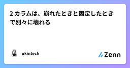
2 カラムは、崩れたときと固定したときで別々に壊れる Zennの「CSS」のフィード
書籍の詳細ページを 2 カラムにしました。左に本文、右に購入カードです。PC で見ると狙いどおりでしたが、実際には同じ日に 2 つの不具合が出ました。モバイルで購入導線がページ最下部に沈んでいたPC で購入カードが透けて、下の見出しと重なったどちらも「2 カラムのレイアウト」から出てくるもので、片方はカラムが崩れたとき、もう片方はカラムが固定されたときに現れます。 1. カラムが崩れると、DOM 順が表示順になる最初の構造はこうでした。<div class="grid max-w-4xl gap-10 md:grid-cols-[1fr_16rem]">...
1日前

アップロードフォームが .heic を弾く理由と、フロント側でやるべきこと Zennの「JavaScript」のフィード
iPhone で撮った写真をアップロードしようとしてフォームに弾かれる。ファイル名はIMG_4032.HEIC。ユーザーは困惑し、サポートに問い合わせが来る。この問題はフロントエンド側の対処とユーザー側の対処が別物なので、両方を分けて整理します。 まず HEIC が何なのかHEIF はコンテナフォーマットで、iOS 11 以降の iPhone は既定でこれを使い、拡張子 .heic で保存します。中の画像は HEVC（H.265）で圧縮されていて、ここが問題の根っこです。HEVC は特許で保護されています。実害が出るのは Windows です。.heic を開くには Mi...
2日前
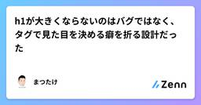
h1が大きくならないのはバグではなく、タグで見た目を決める癖を折る設計だった
Zennの「CSS」のフィード
!Tailwind CSS を初めて本格的に使ったときに手が止まった話です。バージョンは v4。WordPress のテーマを書いてきた側から見ると、最初は「壊れている」ように見えました。 h1 を書いたのに大きくならない見出しを置いたのに、本文と同じ大きさで出ました。ul に黒丸も付きません。CSS が読み込まれていないのかと思って確認しましたが、読み込まれています。Tailwind のクラスは効いている。効いていないのはタグそのものの見た目でした。原因は Preflight です。Tailwind が最初に読み込むリセットCSSで、ブラウザ既定のスタイルを意図的...
2日前

開発環境を決める～【連載】実況パズルプログラミング Zennの「JavaScript」のフィード
前回は、okozeを始めた理由と、このプロジェクトを通して考えてみたいことを書きました。今回は、実際にokozeを作るための開発環境を決めます。 Webアプリケーションか、スタンドアロンアプリケーションか大きく分けると、次の2つの方法があります。Webアプリケーションスタンドアロンアプリケーションスタンドアロンアプリケーションなら、OSに直接アクセスできますし、Webプラットフォームによる制約も避けることができます。一方、今回のokozeにはWebアプリケーションにも魅力があります。複数のOS向けに別々のバージョンを用意しなくても、多くの環境で動かせる可能性がありま...
2日前

noteの本文編集を自動化しようとして2回事故った話と、ProseMirrorを直接操作する方式 Zennの「JavaScript」のフィード
note の記事本文を、ブラウザ操作の自動化で書き換えようとしました。「範囲を選択して貼り替える」だけの単純な作業のはずが、2回、違う原因で事故りました。 1回目は本文の先頭に意図しない挿入が起き、既存のテキストと結合して壊れた状態のまま公開されました。2回目は「貼り替えたつもり」が実際には追記になり、本文が丸ごと二重になりました。原因はどちらも同じところにあります。note のエディタは ProseMirror で、DOM上のテキスト選択とエディタ内部の選択状態は別物だということです。合成イベントで「選択して削除して貼る」を再現しようとする限り、この2つのズレにいつか当たります。最...
2日前

変更の影響を境界で止める — Next.js App Router のディレクトリ設計 Zennの「frontend」のフィード
はじめにフロントエンドの設計には、バックエンドの MVC やクリーンアーキテクチャのような、広く共通認識になった型がありません。それでも、サービスや機能が拡大するにつれて、設計の課題は確実に増えていきます。コンポーネントが肥大化する、バックエンドとの連携箇所が散らばる、パフォーマンスやキャッシュの改善で触る範囲が読めない。どれも最初は小さな違和感で、気づいたときには直すのが大変になっているものです。設計で大事なのは「後からでも柔軟に変えられるか」だと思っています。機能が増えてコードが肥大化してからでは、直すこと自体が技術的負債の返済になってしまうからです。特に Next...
2日前

Chatworkにスレッド表示がないので、Chrome拡張を作って公開した Zennの「JavaScript」のフィード
はじめにChatworkの返信は、リンクを押せば親メッセージに飛べます。でも「この部屋でいま何本の話が同時に動いているのか」は、直感的にわかりません。Slackにはスレッドがあります。Chatworkにあるのは返信と引用です。この差は機能の欠落というより、画面の情報構造の差だと思っています。どのメッセージがどのメッセージへの返信か、というデータ自体は存在しているのに、表示が時系列の1列しかない。これは思想の違いなのでChatwork批判をするつもりはなく、スレッド機能は便利ですが正しく使うにはユーザーのリテラシーが求められるので、ユーザー層を考えればつけないほうが正しいと思い...
2日前

WebP変換をブラウザだけで完結する — Canvasエンコードと透過・可逆/非可逆の勘所 Zennの「JavaScript」のフィード
3行まとめ画像を WebP へ（また WebP から JPEG/PNG へ）変換するブラウザ完結ツールを作った。サーバー不要で、canvas.toBlob(..., 'image/webp', quality) がWebPエンコードを担うWebPは同等画質でJPEGより2〜3割ほど軽くなり、しかも透過（アルファチャンネル）を持てる。「小さくしたいが透明も残したい」を両立できるのがJPEGとの決定的な違い品質スライダーが効くのは非可逆のWebP・JPEGだけ。可逆のPNGでは品質引数を渡さないWebPはWeb表示を軽くするのに効くが、扱いに困る場面もある。「サイトの画像を...
2日前
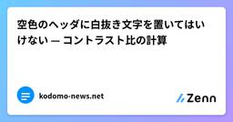
空色のヘッダに白抜き文字を置いてはいけない — コントラスト比の計算 Zennの「CSS」のフィード
こんにちは。小学生向けのニュースサイト、こどもニュースをつくっています。このサイトのヘッダは、上段が空をイメージした色付きのバーです。ライトモードでは空色に雲と太陽が浮かんでいます。色付きのバーなので、最初は白い文字を置きました。よくある組み合わせです。読みにくかったので、変えました。 数字で見る使っている空色は #4aa8ff です。この上に白い文字を置いたときのコントラスト比は 2.5:1 でした。WCAG の基準では、通常サイズの文字で 4.5:1 が必要です（AA レベル）。大きい文字なら 3:1 に緩和されますが、ナビゲーションの文字は大きくありません。2.5:1...
2日前

AIで作ったHTMLゲーム、どこに投稿できる？ 2026年9月に7つ調べた Zennの「JavaScript」のフィード
ChatGPTやClaudeに「ミニゲーム作って」と頼むと、HTMLファイルが1枚出てきます。ブラウザで開けば動く。じゃあこれをどこに置けば人に遊んでもらえるのか。2026年9月に、投稿できそうなサイトを7つ、公式ページの記載を読んで調べました。先に断っておくと、私はこの中の PUNIPO を作っている人間です。なのでPUNIPOのことは一番よく知っていますが、他のサイトも同じ基準で並べます。間違いがあればコメントで教えてください。直します。 結論の表「HTML1枚をそのまま」は、zipにせず、サーバーも用意せず、ファイル1つで投稿できるかどうかです。サイトHTML1...
2日前

React Now Rusted All The Way Out
Master.dev Blog RSS Feed
The transition to the Rust version of the React Compiler for the 1,036-file React Router codebase resulted in a significant speed increase, improving build times from 14.3 seconds to 0.81 seconds. The new compiler addresses previous limitations and ensures consistency across the toolchain, making it easier to manage builds with enhanced performance and capabilities.
2日前

コーダーからフロントエンドエンジニアへ #1-44｜for...of とくり返しの制御──モダンな回し方 Zennの「frontend」のフィード
はじめに前回の #1-43 で、for文の3つ組（初期化・条件・更新）を扱いました。配列を回せるようになった一方で、こんな引っかかりも残ったはずです。const items = ["りんご", "みかん", "ぶどう"];for (let i = 0; i < items.length; i++) { console.log(items[i]);}やりたいことは「中身を順番に取り出す」だけなのに、カウンタの i が3回も登場します。しかも i を使うのは最後の items[i] の一箇所だけ。目的に対して、書く量が多すぎます。そこで登場するのが for...o...
2日前
コーダーからフロントエンドエンジニアへ #1-44｜for...of とくり返しの制御──モダンな回し方 Zennの「JavaScript」のフィード
はじめに前回の #1-43 で、for文の3つ組（初期化・条件・更新）を扱いました。配列を回せるようになった一方で、こんな引っかかりも残ったはずです。const items = ["りんご", "みかん", "ぶどう"];for (let i = 0; i < items.length; i++) { console.log(items[i]);}やりたいことは「中身を順番に取り出す」だけなのに、カウンタの i が3回も登場します。しかも i を使うのは最後の items[i] の一箇所だけ。目的に対して、書く量が多すぎます。そこで登場するのが for...o...
2日前
9/4 (金)

「同じに見えるのに一致しない」を目で見たくて、Unicode正規化の比較ツールを作った Zennの「JavaScript」のフィード
背景私は文字コードが苦手です。苦手なまま10年以上やってきたので、いまさら向き合うのも気が重いのですが…、自分のサイト群を自動更新していると、年に何度か「同じ文字列のはずなのに一致しない」に殴られます。直近だと、ファイル名から作った slug と、JSON に書いた slug が一致しませんでした。ターミナルに並べて表示すると、完全に同じに見える。それでも === は false を返す。こういうとき、毎回 Node の REPL を開いて [...s].map(c => c.codePointAt(0).toString(16)) を打っています（効率は悪いです…...
2日前

AIに作らせた画面が「AIっぽい」のは、センスの問題ではない 1
Zennの「frontend」のフィード
生成AIに画面を作らせると、毎回これが出てきます。全画面中央揃えのヒーロー。大きな見出し、サブテキスト、その下にCTAボタンアイコン付き3カラムの等幅カード紫から青のグラデーション背景、またはグラデーションの見出し文字ワードマーク＋リンク5個＋右端にCTAのヘッダー4カラムのリンク＋SNSアイコンのフッター純黒 #000000 の文字に、純白 #ffffff の背景見た瞬間に分かります。そして分かると信用されません。「中身も同じように既製品なのだろう」と読まれるからです。これはモデルの美的センスの問題ではありません。入力の欠落の問題です。 なぜ最頻値が出るのか...
3日前
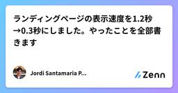
ランディングページの表示速度を1.2秒→0.3秒にしました。やったことを全部書きます Zennの「frontend」のフィード
1.2秒かかっていたランディングページが、0.3秒で開くようになりました。 ホスティングは月0円、Lighthouse 100。サーバーは1台も使っていません。先週、個人開発のバックエンドをVercelからFly.ioへ移した話を書きました。APIは1.9秒から60〜85msになりました。でも、そのAPIを叩くより前に、人はランディングページを開きます。 そこが遅ければ、バックエンドが何msだろうと、誰も知らないまま帰ります。本番の oshisuki.com、Lighthouse デスクトップ この記事に書いてあることやったことは4つで、どれもそのまま他のサイトに持っていけま...
3日前
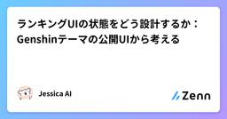
ランキングUIの状態をどう設計するか：Genshinテーマの公開UIから考える Zennの「frontend」のフィード
この記事は公開ページの画面と文言をブラックボックス観察した設計メモです。ソースコード、利用フレームワーク、内部ストレージ、性能値、実運用の構成を確認したものではありません。以下の型と状態図は、観測した操作を議論しやすくするための提案です。原神のキャラクターをランキングするUIには、画像一覧、検索、複数のティア、名前変更、追加、リセット、ローカル保存、PNG出力が現れます。見た目はドラッグ操作ですが、設計対象は「アイテムを移動する状態エディタ」です。 まず分けるべき状態検索文字列は表示状態、キャラクターの所属は編集状態、タイトルやティア名はドキュメント状態です。これらを一つの配...
3日前

GitHub Actions の matrix で組み合わせが増えすぎたときの include の使い方 Zennの「frontend」のフィード
はじめに実務では複数のプロジェクトを同時にCIで実行するケースが多くなります。今回はサンプルコードをベースにincludeキーを使ったmatrixを説明します。 matrixとはmatrixは、1つのjobの定義で、複数のジョブを実行することができます。似たようなjobを複数実装した場合にはとても有効的です。例えば3つの異なるjobで起動するときは${{ matrix.token }}とmatrixをcontext経由で参照することができます。jobs: sample: runs-on: ubuntu-latest strategy: m...
3日前
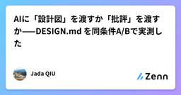
AIに「設計図」を渡すか「批評」を渡すか——DESIGN.md を同条件A/Bで実測した Zennの「frontend」のフィード
結論から同じモデル・同じお題で、参照ドキュメントだけを差し替えてランディングページを2枚生成させたら、トークン表まで書き込んだ「設計図」型ドキュメントの方が、設計思想を解説した「批評」型ドキュメントより明確に良い成果物を出した。ただし、批評型だけが勝った箇所が1つあり、そこにこの2形式の使い分けの本質があった。 背景：DESIGN.md という形式AIにUIを作らせると、紫のグラデーションと角丸カードの「AIっぽい」画面が出てくる。コードが書けないのではなく、「良い」の定義がモデルに渡っていないのが原因だ。これを参照ドキュメントで解決するのが DESIGN.md という形式...
3日前
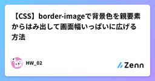
【CSS】border-imageで背景色を親要素からはみ出して画面幅いっぱいに広げる方法 Zennの「CSS」のフィード
1. はじめに「innerやcontainerをはみ出して、背景色を画面幅いっぱいにしたい！」Webコーダーなら一度は出会うであろうデザインでしょう。そして最初は困惑します。(ソースは一年目の時の私です)今回はたった1行でこの問題を解決する方法をご紹介します。他の実装方法も記載していきます〜(解説は3から) 2. border-imageとは軽くborder-imageの説明を記載しておきます。border-imageは、枠線に画像をつけることのできるプロパティです。以下のような書き方で指定を行います。border-image: [ソース] [スライス] / ...
3日前
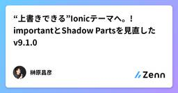
“上書きできる”Ionicテーマへ。!importantとShadow Partsを見直したv9.1.0 Zennの「CSS」のフィード
1つのion-radio-groupで2つのInset Listを囲む。Ionicでは自然な次のマークアップで、Listの角丸と区切り線が崩れる不具合がありました。<ion-radio-group> <ion-list inset="true">...</ion-list> <ion-list inset="true">...</ion-list></ion-radio-group>きっかけは、利用者から届いたIssue #129です。最小再現を追うと、単に角丸を直すだけでは済みませんでした。テーマのC...
3日前
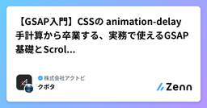
【GSAP入門】CSSの animation-delay 手計算から卒業する、実務で使えるGSAP基礎とScrollTrigger Zennの「CSS」のフィード
はじめにAstro.jsのプロジェクトで、GSAP(GreenSock Animation Platform)を使った演出を数多く実装する機会がありました。たとえば次のような演出です。見出しや画像をふわっと表示させる登場演出スクロールに合わせてコンテンツが順番に表示される演出(ScrollTrigger)CSSでレイアウトやスタイリングは書いてきたものの、transitionや@keyframesを使ったアニメーション実装の経験はほとんどなく、JavaScriptのアニメーションライブラリも初めてでした。この記事は、同じように「CSSは書けるけど、アニメーションはガッツ...
3日前

国産ノーコードツール「Studio」の進化がすごすぎる！ 実務レベルの制作まで詳しく解説された -Studio ノーコードの教科書 3 コリス
※本ページは、アフィリエイト広告を利用しています。 ノーコードでWebサイトを制作できるデザインツール「Studio」、ちょっと目を離すとサービス内容が強化されていたり、ツール自体が進化していたりします。 機能改善やアッ […]
3日前

TanStack Virtual を使ってみた話 Zennの「frontend」のフィード
初めまして。ギークプラスのフロントエンドエンジニアの杉平と申します！今回は、サプライチェーン計画のプロダクトで在庫計画の画面をリニューアルしたときのお話です。作ったのは、商品ごとのカードを縦に積んでいって、開くと中に大きな表が出てくる画面でした。表の縦軸は「拠点 × 指標」で、拠点 1 つにつき在庫数や入出荷数といった指標が並びます。横軸は時間で、日次・週次・月次を切り替えられます。これが最大でどれくらいになるかというと、拠点 100 件 × 指標 9 種類で 900 行。日次は今日を挟んで前後 365 日ぶん出すので 731 列。掛けると 約 66 万セルです。1 商品ぶんでこの...
3日前

Java誕生から現代に至る歴史をゴスリン氏ら関係者が語る公式ドキュメンタリー「The Java Story」、YouTubeで公開中 163 Publickey
Java言語が誕生してから30年以上の年月が経過しています。 Javaはもともと家庭用デバイスのための言語として作られたものの、結局は採用されずに失敗プロジェクトとして始まったことは多くの方がご存知でしょう。 そこから新たな展開としてWeb...
3日前

Webブラウザ上でターミナルのシミュレータを実行、GitやCLI、Vimなどを無料で学べる「WebTerm Learn」が公開 140 Publickey
Webブラウザ上でまるで本物のように振る舞うターミナルのシミュレータを実行し、そこでGitやLinuxのコマンドライン、Vimなどの操作を無料で学べる学習プラットフォーム「WebTerm Learn」を、株式会社initが公開しました。 W...
3日前
9/3 (木)
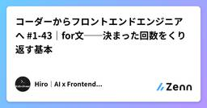
コーダーからフロントエンドエンジニアへ #1-43｜for文──決まった回数をくり返す基本 Zennの「frontend」のフィード
はじめに前回までで、配列を「作る・見る・出し入れする・コピーする」が一通りそろいました。ただ、まだ肝心なことができません。全部の要素に、同じ処理をすることです。const items = ["りんご", "みかん", "ぶどう"];console.log(items[0]);console.log(items[1]);console.log(items[2]);3件ならこれで済みます。では、APIから返ってきた100件は？ 件数が毎回変わる商品リストは？ 手で並べる方法は、ここで完全に破綻します。そこで登場するのが**くり返し（ループ）**です。今日扱う for 文は...
3日前
Two vs. Three-State Color Theme Toggles Master.dev Blog RSS Feed
There was a fun and intellectual debate recently about UI controls for dark/light mode. I think the story starts with Modern Web Guidance skills from Google, which recommend using a two-state toggle, apparently written by Lea Verou, and Bramus Van Damme takes issue with it. Lea explained her thinking in detail, which is a great […]
3日前
Agentation で Web ページ上の UI に直接プロンプトを入力 Zennの「frontend」のフィード
AI とフロントエンドの開発を行う上で、ちょっとした修正の依頼も意図がうまく伝わらないことが多々あります。一方で、AIに直接ブラウザを操作させる方法もありますが、「このボタンの角を丸めて欲しい」というような要望を伝えるためだけに利用するには時間やコンテキストの面からオーバースペックに感じる人もいるのではないでしょうか。そんな時に便利なのが、ブラウザの要素に直接プロンプトを添付できる Agentation です。 Usage導入方法より先に実際に使ってみるのが良いかと思います。公式サイトで利用可能になっています。まず、画面右下に表示される黒いボタンをクリックすると以下のように...
4日前
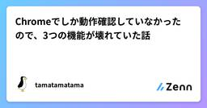
Chromeでしか動作確認していなかったので、3つの機能が壊れていた話 Zennの「frontend」のフィード
Chromeでは全部動いていましたブラウザだけで動くファイル変換ツール「なんでも工房」を個人で作っています。画像・PDF・動画あわせて30種類ほど。全部クライアントサイドで、ファイルはサーバーに送りません。https://nandemo-kobo.com/開発中の動作確認はずっとChromeでやっていました。全ツールが動き、レイアウトも崩れず、コンソールにエラーもゼロ。ある日、思い立ってSafari（WebKit）とFirefoxでも同じ確認を回してみたら、3つの機能が壊れていました。しかも全部、エラーも警告も一切出さずに壊れていたタイプです。ページは開く。ボタンは押せる。...
4日前
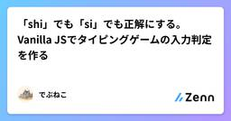
「shi」でも「si」でも正解にする。Vanilla JSでタイピングゲームの入力判定を作る Zennの「CSS」のフィード
猫種と毛柄は、どちらも猫の話ですが別のものです。「メインクーン」は猫種で、「キジトラ」は毛柄です。その2つに、猫のからだとしぐさの言葉を加えて、猫に関する言葉だけが出てくるタイピングゲームを作りました。名前はねこタイプ、全120語で、30秒・60秒・90秒から時間を選べます。https://asobi-nekotyping.vercel.app作りはじめてすぐに分かったのは、このゲームで一番面倒なのはゲーム部分ではなくローマ字の入力判定だという点でした。「しゃむ」は shamu でも syamu でも正しく、「ニャー」の長音をどう打つかは人によって違います。この記事では、Van...
4日前
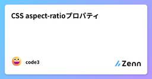
CSS aspect-ratioプロパティ Zennの「CSS」のフィード
😄この投稿は、codingeverybody.jpのコンテンツをもとに作成しています。aspect-ratioプロパティは、要素の縦横比（幅に対する高さの比率）を設定します。このプロパティを使用すると、一方のサイズだけを指定しても残りのサイズが自動で計算され、レスポンシブレイアウトでも一定の比率を簡単に維持することができます。特に、画像（<img>）や動画（<video>）、<div>要素など、要素ボックスの横幅（幅）と高さ（高さ）の比率を簡単に維持・調整・設定できます。 形式の構文selector { aspect-ratio:...
4日前

AWS、新たな太平洋海底ケーブル「Sta'O'Nuk」発表。420Tbps、2029年に稼働へ。集中リスク排除のため新たな陸揚げ拠点を採用
19 Publickey
Amazon Web Services（AWS）は、日本と米国を結ぶ新たな海底ケーブル「Sta'O'Nuk」を発表しました。2029年に稼働開始予定です。 海底ケーブルは20ペアの光ファイバーで構成され、420Tbpsの帯域を提供します。 ...
4日前

border-shapeプロパティにこんな使い方があったとは！ 一つの要素だけ背景色を幅いっぱいに広げるモダンCSSのテクニック 6 コリス
section要素を積み重ねたときに、一つの要素だけ背景色をブラウザの幅いっぱいに広げるモダンCSSのテクニックを紹介します。 下記は2番目のテキスト要素のとこだけオレンジ色の背景色をブラウザの幅いっぱいに広げたものです […]
4日前

Frontend Frameworkの設計思想比較：React / Vue / Svelte Zennの「frontend」のフィード
前提：3つのフレームワークは「異なる問い」に答えている現代フロントエンドの文脈では、React・Vue・Svelte を同一軸で比較し、「どれが優れているか」を論じることが多くあります。しかし、現場で実際に困るのは、性能差の数％ではなく、**「そのフレームワークが前提としている世界観と、自分たちのプロジェクトが噛み合うかどうか」**です。この3者はそもそも異なる問題設定に答えるために生まれたものであり、単純な優劣比較には本質的な無理があります。本稿では、各フレームワークの以下の2点に着目して、思想としての比較を試みます。設計上の中心的判断（Core Design Deci...
4日前

AWSをゲームで学べる「AWS Cloud Quest」に新バージョン「AWS Cloud Quest 2.0」登場！ AIによるバーチャル顧客と対話し、要件を聞き出して正しくソリューションに落とし込め 150 Publickey
Amazon Web Services（AWS）は、3DオープンワールドでAWSを学べるオンラインゲーム「AWS Cloud Quest」の新バージョン「AWS Cloud Quest 2.0」の提供を開始しました。 AWS Cloud Q...
4日前

AWSとAzureが最大100Gbpsでの相互接続を開始。これでAWSはAzure、Google Cloud、Oracle Cloudとのマルチクラウドをサポート 2 Publickey
Amzon Web Services（AWS）とマイクロソフトは、両社が協力してAWSとMicrosoft Azureを最大100Gbpsの高速な閉域網で相互接続することを発表しました（AWSの発表、マイクロソフトの発表）。 両社ともにプレ...
4日前

ボットの振る舞いを動的に学習して防御を改善し続ける、「Adaptive Intelligence」ボット検出エンジン、Cloudflareが発表 9 Publickey
Cloudflareは、ボットの侵入手段を同社のネットワーク全体から動的に学習し、防御を継続的に改善し続ける「Adaptive Intelligence」という仕組みを採用した新しいボット検出エンジンを発表しました。 Cloudflare&...
4日前
9/2 (水)

AIにUI修正を任せるとき、手動動作確認だけでなくE2Eテストまで書かせる Zennの「frontend」のフィード
はじめにAIにUIの修正を依頼すると、実装だけでなくブラウザを操作して動作確認まで行わせることができます。ただ、毎回AIに「画面を開いて確認して」と依頼するだけでは、その場では確認できても、次の修正で同じ不具合が再発したときに自動で検知できません。そこで、再発しやすいUIの振る舞いについては、手動の動作確認だけで終わらせず、PlaywrightなどのE2Eテストとしてコードに残す方が有効です。この記事では、AIにUI修正を任せる場合に、手動動作確認とE2Eテストをどう使い分けるかどのようなUIをE2EテストにするべきかE2Eテストをどのタイミングで実行するか修正とテ...
4日前
New Things You Should Know About HTML Here in Mid 2026 2Master.dev Blog RSS Feed
You've got your permissions elements, custom element registries, a potential future for HTML includes, HTML-in-Canvas, and a bunch more.
4日前
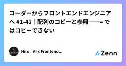
コーダーからフロントエンドエンジニアへ #1-42｜配列のコピーと参照──= ではコピーできない Zennの「frontend」のフィード
はじめに前回は slice() と splice() を扱いました。最後にこんなコードが出てきたのを覚えているでしょうか。const original = ["A", "B", "C"];const same = original;original.splice(1, 1);console.log(same); // ["A", "C"] ← 触っていないのに変わっているあのとき「same = original は同じ配列を2つの名前で指しているだけ」と書きました。今回はその正体を、正面から扱います。不思議なのは、数値や文字列では同じことが起きないという点です。= ...
5日前

null/undefinedの罠から学んだ、ジュニアエンジニアの多段AIデバッグ術 Zennの「frontend」のフィード
導入：元営業・実務経験ゼロの私が、2か月で新規実装を任されるまでこんにちは！フロントエンド開発チームの高見です。私は営業部門出身で、開発チームに異動するまで実務でのコーディング経験は全くありませんでした。そんな私が、異動からわずか2か月で「CSVダウンロード」という新規機能の実装を任されました。もちろん丸投げではなく、チームの手厚いレビュー体制があってこその成長ですが、その急速なキャッチアップを支えていたのが「AIをコード生成ツールではなく、思考を深める家庭教師として使い倒す」という勉強法でした。今回は、ある日のバグ調査を例に、「限定情報型」と「全体検証型」、2つの役割のA...
5日前
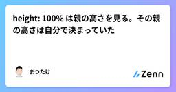
height: 100% は親の高さを見る。その親の高さは自分で決まっていた Zennの「CSS」のフィード
!2作目のポートフォリオとして「Hubpin」（分散した発信を1か所に集めるハブサイト）を作りながら書いています。リポジトリ: https://github.com/Matsutake29/hubpinNext.js（App Router） + Supabase + Tailwind CSS カードを開いたら、隣の行に重なったグリッドに並べたカードを、押すと説明文が開く形にしていました。開いた瞬間、展開パネルが <li> からはみ出して次の行のカードと重なります。パネルの中の文字は、隣のカードに隠れて左端が読めない状態でした。書いていたのはこれだけで...
5日前

AIエージェントをIDEから切り離す。「セッションの正本」はHostに置く Zennの「frontend」のフィード
IDEを閉じてもAIエージェントが走り続ける。ここまでは、プロセスを常駐させれば実現できる。厄介なのは、そのセッションをデスクトップとWebから同時に開いたときだ。片方でツール実行を承認し、もう片方では古い画面のまま停止を押す。再接続したクライアントは、どの操作まで反映済みなのか。チャット履歴を保存しただけでは決められない。長時間動くエージェントでは、モデルより先に「誰が状態の正本を持つか」を設計したほうがいい。 UIの寿命を実行の寿命から外すVS CodeのAgent Hostは、エージェントのセッションをエディタとは別のプロセスで扱う。エディタやフォルダを閉じたあともセッシ...
5日前

ClaudeにSalesforceを統合した「Claudeforce」、AnthropicとSalesforceが発表。Claudeから営業データ分析や顧客対応を実現 21 Publickey
SalesforceとAnthropicが「Claudeforce」を発表しました。 第一弾となる「Salesforce in Claude」では、Claudeの画面からプロンプトを入力するだけで、Salesforceのデータやワークフロー...
5日前

このデザインは一体何？ 長年のもやもやが解決、Adobeの管理画面で見かけるユーザー名横の謎アイコンの正体 24 コリス
Adobeを長年使用してきて、もやもやしていたのが、アイコンのデザインです。 円グラフにしてはバランスがおかしいし、右下にはなんか切れ端があるし、これって一体何だろう？ とずっと疑問に思っていました。 このアイコンはAd […]
5日前

AIエージェントがRedshiftを操作してDWH構築や集計分析など可能に、Amazon RedshiftがAgent Toolkit for AWSと統合
Publickey
Amazon Web Services（AWS）は、同社がフルマネージドで提供するデータウェアハウスサービス「Amazon Redshift」が、Agent Toolkit for AWSと統合されたことを明らかにしました。 Agent T...
5日前

VS Code上で開発のセカンドオピニオンを別のAIエージェントから得られる「Rubber Duck」機能が実験的実装 4 Publickey
オープンソースで開発されているコードエディタ「Visual Studio Code」（以下、VS Code）の最新版となる「VS Code 1.135」で、開発に関するセカンドオピニオンをメインのAIエージェントとは別のAIエージェントに依...
5日前
9/1 (火)

Web 標準動向 2026年8月版 19 サイボウズ フロントエンドのフィード
こんにちは！ サイボウズ株式会社 デザインテクノロジストの saku (@sakupi01) です。 はじめにサイボウズは 2025 年 4 月より、W3C のメンバーに加入しました。https://blog.cybozu.io/entry/joining-w3c標準化プロセスに関わることができるようになるための最初の一歩として、フロントエンドエンジニアの一部のメンバーは積極的に Web 標準のキャッチアップを行っています。そこで、毎月メンバーが興味を持った Web 標準に関する話題や、実際に標準化プロセスに関わることができた場合にはその報告などを 1 つの記事としてまとめ、...
6日前
Web 標準動向 2026年8月版 19
Zennの「frontend」のフィード
こんにちは！ サイボウズ株式会社 デザインテクノロジストの saku (@sakupi01) です。 はじめにサイボウズは 2025 年 4 月より、W3C のメンバーに加入しました。https://blog.cybozu.io/entry/joining-w3c標準化プロセスに関わることができるようになるための最初の一歩として、フロントエンドエンジニアの一部のメンバーは積極的に Web 標準のキャッチアップを行っています。そこで、毎月メンバーが興味を持った Web 標準に関する話題や、実際に標準化プロセスに関わることができた場合にはその報告などを 1 つの記事としてまとめ、...
6日前
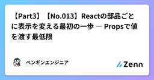
【Part3】【No.013】Reactの部品ごとに表示を変える最初の一歩 ― Propsで値を渡す最低限 Zennの「frontend」のフィード
みなさん、こんにちは！ペンギンエンジニアです！前回の012で、Greeting という部品を定義して、3つ並べて使って、ファイルに分けるところまでやりました。ただ、3つ並べても表示は全部「こんにちは、React！」のまま。同じ表示にしかならないという物足りなさを、あえて持ち帰ってもらう回でしたね。予告どおり、今日はその物足りなさを解消します。先に種明かしをすると、Propsも特別な仕組みではありません。コンポーネントがただの関数なら、Propsはただの引数です。筆者はSES現場で、同じ見た目のUIをコピペで3つ作って、仕様変更のたびに3箇所を直す羽目になったコードを何度も...
6日前

CSSの新機能！ 元のカラーの透明度だけ変更できる相対アルファカラーなど、Chrome 152で新しく追加された5個の機能 3 コリス
先週アップデートされたChrome 152に追加された、CSSとUIに関する新しい機能を紹介します。 今回のアップデートで注目すべきは、元のカラーの透明度だけ変更できる相対アルファカラー、HTMLのグローバル属性「aut […]
6日前
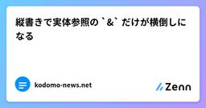
縦書きで実体参照の `&` だけが横倒しになる Zennの「CSS」のフィード
こんにちは。小学生向けのニュースサイト、こどもニュースをつくっています。このサイトには縦書きの表示モードがあります。縦書きでは、英数字や一部の記号をそのままにすると横倒しになるので、span で包んで正立させています。その処理を入れた後も、& だけが横倒しになる記事がありました。 症状「コピー&ペースト」のような表記で、& が寝ています。他の記号（% や ℃）は正しく立っているので、& に固有の何かがありました。さらに調べると、同じ & でも寝る記事と寝ない記事があります。 原因: 実体参照で書かれていた記事の HTML には、&...
6日前

DHH氏が開発するLinux OS「Omarchy Quattro」リリース。AIエージェントとをOSと統合、スキルによりAIエージェントがOSの設定や操作、プラグイン作成まで支援 120 Publickey
Ruby on Railsの作者として知られるDHH氏は、同氏が開発するデスクトップ向けLinux OS「Omarchy」の最新バージョンとなる「Omarchy 4.0」（Omarchy Quattro）をリリースしました。 Omarchy...
6日前

DHH氏が「Omacom Foundation」を設立、Omarchy推進によるLinuxデスクトップの本格普及を目指す。マイケル・デル、ジャック・ドーシーら著名人も出資 21 Publickey
DHH氏が開発したデスクトップ向けLinux「Omarchy」を推進するための団体「Omacom Foundation」が設立されました。 Omacomは「おまかせコンピューティング」の略 Omacom Foundationの「Omacom...
6日前
Let’s Use the Emergent CSS random() Function in all the Browsers  CSS-Tricks
CSS-Tricks
The journey to create a polyfill for the upcoming CSS random() function that works in all browsers.Let’s Use the Emergent CSS random() Function in all the Browsers originally handwritten and published with love on CSS-Tricks. You should really get the newsletter as well.
6日前
8/31 (月)

What’s !important #18: <geolocation>, Syntax ::highlight()ing, named-feature(), and More CSS-Tricks
Well, that’s a wrap. No, not a flex-wrap, but rather today marks a new day, week, month, season, aaaand new edition of What’s important (#18), bringing you the best content that developers have produced over the last couple of weeks or so.What’s !important #18: <geolocation>, Syntax ::highlight()ing, named-feature(), and More originally handwritten and published with love on CSS-Tricks. You should really get the newsletter as well.
6日前
Having Fun with Vercel’s AI SDK and AI Gateway Master.dev Blog RSS Feed
The why and how to get it installed and use it with different models, then actually build something. Plus a little Zod type safety for good measure.
6日前
The Many Faces Of September (2026 Wallpapers Edition) Articles on Smashing Magazine — For Web Designers And Developers
Could there be a better way to welcome the new month than with a new collection of desktop wallpapers? Whether you’re holding tightly onto summer or eagerly awaiting autumn, we’ve got some eye-catching designs to make your September just a bit more colorful. Enjoy!
7日前
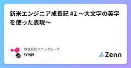
新米エンジニア成長記 #2 〜大文字の英字を使った表現〜 Zennの「CSS」のフィード
はじめにフロントエンドエンジニアをしているRyogaです。今回は、Webページの見出しなどでよく使われる大文字の英字を使った表現の最適解を教わったので、私と同じ初学者の方々や、ご存じでない方々に向けてまとめていこうと思います。 大文字の英字を使った表現とは執筆のために気取った言い方をしていますが、大文字の英字を使った表現とは、簡単なものです。例として以下の画像をご覧ください。こちらは弊社のコーポレートサイトから引用したものですが、トップページの見出しに「OUR BUSINESS」という文言が使用されています。この見出しを実装しようと思った時、あなたならどのように実装...
7日前
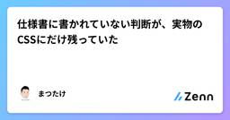
仕様書に書かれていない判断が、実物のCSSにだけ残っていた Zennの「CSS」のフィード
!2作目のポートフォリオとして「Hubpin」（分散した発信を1か所に集めるハブサイト）を作りながら書いています。リポジトリ: https://github.com/Matsutake29/hubpinNext.js（App Router） + Supabase + Tailwind CSS自分で作った静的サイトを、Next.jsのアプリに作り直しています。デザインの仕様書は自分で書いたものが残っていました。移植リストも作りました。色とフォントを写して、あとはコンポーネントに割り直すだけ。移すだけのはずでした。その移植リストを、現物のCSSが否定してきました。 ...
7日前
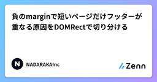
負のmarginで短いページだけフッターが重なる原因をDOMRectで切り分ける Zennの「CSS」のフィード
大きなページヘッダーへ本文を重ねるデザインで、本文の長いページは問題ないのに、内容が1件しかない一覧ページだけフッターがヘッダー背景へ入り込む不具合がありました。見た目だけでは、次のどれが原因か判断しにくい状態でした。z-indexによる重なり順positionによる通常フローからの離脱overflowによる切り抜き負のmargin-topによる要素位置の移動短い本文による高さ不足実際の原因は、本文を上へ重ねるための負のmarginと、本文要素の高さが内容量任せになっていたことの組み合わせでした。この記事では、特定のフレームワークには依存せず、getBoundi...
7日前

Amazonで2026年夏のスマイルSALEが開催！ セールで私が買ったもの、見逃しがちなお買い得品を紹介します コリス
※本ページは、アフィリエイト広告を利用しています。 Amazonでビッグセール「スマイルSALE」が開催しています。このセールでは特に生活用品が数多く対象になっており、通常のセールよりもかなり安くなって、非常にお買い得で […]
7日前